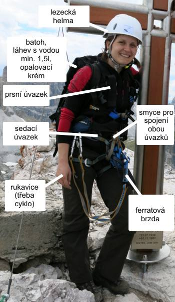

Vybavení na ferraty
Budete potřebovat:
{kind=link}
- lezeckou helmu (jedna z nejdůležitejších částí vybavení, neboť různé kamínky padají z velké výšky poměrně často)
- menší batoh na svačinku, pláštěnku, láhev s vodou (min 1,5 l) a opalovací krém
- prsní úvazek (tzv. prsák) – např. něco takovéhoto
- sedací úvazek (tzv. sedák) – např. něco takovéhoto, dá se sehnat i speciální sedák na ferraty, který je o něco málo pohodlnější na používání na ferratách, ale na skalní lezení je zas horší
- plochou smyci pro svázání úvazků dohromady v délce aspoň 1,5 m (lidé delší než 1,8m budou potřebovat trochu delší) o rázové síle aspoň 15 kN – např. tahle – prodává se to normálně na délku Hudy, v Alpsportu, Rock Pointu a podobných shopech.
- ferratová brzda/pádový tlumič – to je taková věc, co se zničí, když spadnete, aby vám nepružný ráz na ocelovém laně nezpůsobil zlomeniny a jiná závažná zranění. Je jen na jedno použití, na ferratách se totiž normálně nepadá. Občas se nazývá pojmem „ferratový set“ což je odvozeno od toho, že se prodává v „setu“ se 2 karabinami, kterými se připoutáváte k ocelovému lanu. Jsou 2 základní typy ferratových brzd – párací a kovový. Trochu proti intuici je modernější a bezpečnější ten párací, protože na něm je prostý pohledem vidět, zda je nebo není poškozen. Pokud si půjčujete set z půjčovny, preferujte tedy párací. Pokud budete vybírat mezi více brzdami s různými typy karabin, můžeme doporučit tzv. dlaňové karabiny, které se nám znají oproti nedlaňovým trochu pohodlnější.
- rukavice – lano bývá občas zatraceně studené a občas malinko roztřepené na koncích. Nejvíc se osvědčily klasické cyklorukavice. Můžete potkat i lidi chodíci ferraty v pracovních rukavicích, ale poud už si budete takové kupovat, tak prosím nějaké, co vám nepadají z rukou.
- boty – existují speciální ferratové boty, ale mají je jen opravdu skalní nadšenci do ferrat (kdo by chtěl mít na všechno speciální boty, že…). Dle toho, jak věříte svým kotníkům si vezměte nějakou outdoorovou obuv. Pohorkama nic nezkazíte, v teniskách byste mohli trpět při sestupu.
Ještě se občas hodí mít s sebou nějaké kratší lano do skupiny, ale o to se nemusíte starat.
Půjčovny:
Možná nemáte všechno vybavení ani dost známých, kteří by vám ho půjčili. Doporučujeme následující 2 půjčovny. Pokud máte nějakou jinou oblíbenou, klidně jděte tam. Doporučujeme rezervovat co nejvíce předem:
- V-Tour (celý set za 330 Kč)
- Půjčovna matroše (celý set na 420 Kč).
Ostatní vybavení
Dále se vám bude hodit:
- stan – pokud jedete s někým, tak se domluvte, kdo ho vezme. Pokud jedete sami, vyplňte do přihlášky, zda můžete vzít stan. Pokusíme se to pak poskládat nebo vám dáme včas vědět, že máte začít shánět.
- jídlo na celý víkend, vařič, nádobí – samozřejmě nemusíte, ale budete nám pak závidět teplou večeři. Když se s někým domluvíte dohromady, hned se vám bude vařit rychleji a radostněji.
- spacák, karimatka/nafukovačka
- pláštěnku nebo jiné nepromokavé svršky
- opalovací krém
- láhev na vodu – min 1,5l. Mám pocit, že se občas na vodu stály trochu fronty. Když si dovezete pár litrů z domova, tak vám to může ušetřit nějaký čas.
- cestovní připojištění (pokud nejte členy Alpenverien) – pozor, ne všechna cestovní pojištění pro sporty zahrnují ferraty. My doporučujeme např. Generali, v baličku mini + sporty to stojí na 2 dny přesně 51 Kč
- auto – my máme 1 auto. Počítáme, že na každé 4 lidi, bude potřeba další auto. Napište do přihlášky, pokud můžete vzít auto.